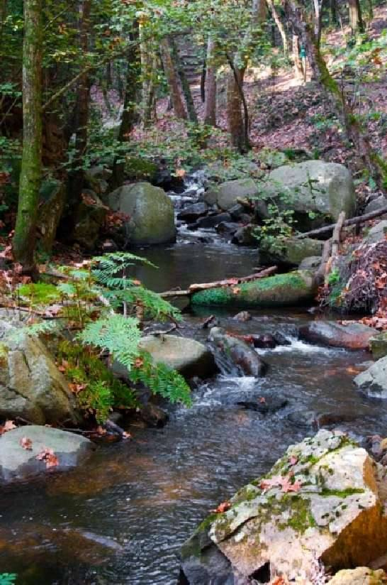

Ruta · Gualba
NOTA: Espai de gestió privada. L'aparcament i els serveis que trobareu són de pagament. L ’accés és lliure per a la gent excursionista que accedeix a peu al Parc i sense la intenció de dinar dins…